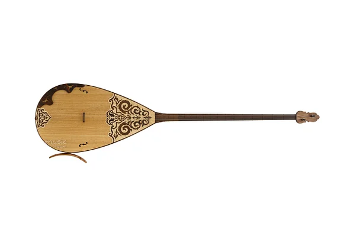

Домбыра тарихы
Домбыра — қазақ халқының ең көне әрі қасиетті аспаптарының бірі. Ол ғасырлар бойы қазақ мәдениетінің, тарихының, салт-дәстүрінің айнасы болып келеді. Екі ішекті бұл аспаппен орындалатын күйлер арқылы халық өз сезімін, қуанышын, қайғысын жеткізген.
Шығу тегі
Археологиялық қазбалар мен тарихи жазбаларға сүйенсек, домбыраның тарихы кем дегенде екі мың жылға созылады. Түркі халықтарының ертедегі шертпелі аспаптарына ұқсас құрылымдар Тянь-Шань, Алтай және Сібір өңірінен табылған.
Құрылысы
Домбыра екі ішекті, мойны ұзын, ағаштан жасалған аспап. Оның шанағы (резонатор) дөңгелек немесе сопақша болады. Шанағы қуысты, бұл оның даусын күшейтуге көмектеседі. Домбыраның ішегі қойдың ішегінен немесе синтетикалық материалдардан жасалады.
Мәдени маңызы
Домбыра — тек музыкалық аспап емес, ол ұлттың жаны, тарихы мен тағдырының көрінісі. Күй өнері арқылы халық түрлі оқиғаларды, соғыстар мен бейбіт кезеңдерді бейнелеген. Домбыра әр отбасында болуға тиіс қасиетті мұра ретінде қарастырылады.
Танымал күйшілер
- Құрманғазы Сағырбайұлы — "Сарыарқа", "Балбырауын" сияқты күй авторы.
- Дина Нұрпейісова — қазақ әйел күйшілерінің ішінде ең танымалы, шәкірттер тәрбиелеген.
- Тәттімбет Қазанғапұлы — төкпе және шертпе күйлердің шебері.
Бүгінгі таңда
Қазіргі кезде домбыра мектептер мен өнер оқу орындарында оқытылады. Оның құрметіне арналған Домбыра күні жыл сайын ұлттық мереке ретінде аталып өтеді. Жастар арасында домбыра тартуға деген қызығушылық артып келеді.